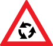
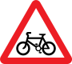
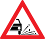

Comparații cu alte țări EU - Anglia
| Indicator | Romania | Anglia |
|---|---|---|
| Stop | ||
| Cedeaza trecerea | ||
| Drum cu prioritate | ||
| Sfarșitul drumului cu prioritate | ||
| Prioritate pentru circulația din sens invers | ||
| Prioritate față de circulația din sens invers | ||
| Curbă la dreapta | ||
| Curbă dublă sau o succesiune de mai mult de două curbe, prima la dreapta |  |
|
| Intersecție de drumuri | ||
| Intersecție cu drum fără prioritate | ||
| Presemnalizare intersecție cu sens giratoriu |  | |
| Semafoare | ||
| Circulație în ambele sensuri | ||
| Drum aglomerat | ||
| Urcare cu înclinare mare | ||
| Coborâre periculoasă |  |
|
| Presemnalizare trecere pietoni | ||
| Pietoni | ||
| Copii | ||
| Bicicliști |  | |
| Animale | ||
| Animale |  |
|
| Drum îngustat pe ambele părți |  |
|
| Drum cu denivelări | ||
| Denivelare pentru limitarea vitezei | ||
| Drum lunecos | ||
| Împreșcare cu pietriș |  | |
| Acostament periculos | ||
| Gheață sau zăpadă |  |
|
| Căderi de pietre |  |
|
| Vânt lateral | ||
| Ieșire spre un chei sau mal abrupt | ||
| Pod mobil | ||
| Tunel | ||
| Aeroport | ||
| Trecere la nivel cu linii de tramvai |  |
|
| Trecere la nivel cu cale ferată cu bariere sau semibariere | ||
| Trecere la nivel cu o cale ferată fără bariere | ||
| Trecere la nivel cu o cale ferată, fără bariere | ||
| Trecere la nivel cu cale ferată dublă, fără bariere | ||
| Lucrări | ||
| Alte pericole |